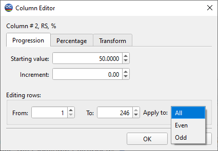
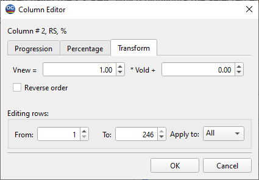

Column Editor
The Column Editor is one of OptiChar’s specialized Spreadsheet Editing Tools, designed for fast and convenient modifications of spreadsheet columns. It is particularly useful for entering an entire column of constants or a series of uniformly increasing or decreasing values.
If no specific rows in the column are selected (marked using the F7 key, which highlights the selected entries), the editor will apply its changes to the entire column. Conversely, if a specific set of rows is selected, the Column Editor will only modify the highlighted portion of the column.
The Column Editor can be accessed from any location where spreadsheet editing is required. You can activate it through the OptiChar Edit menu, the toolbar, or by pressing the F6 key. Additionally, certain modal dialogs include special buttons that provide direct access to the Column Editor.

Upon launching the Column Editor, the title bar indicates which spreadsheet column you are currently editing. You have the option to select specific rows within that column by setting values in the Editing Rows fields. By default, the entire column is selected for editing. However, if you have previously selected certain rows in the spreadsheet, the C**olumn Editor** will automatically display only those selected rows for editing when it opens.
In the Apply to box, you can choose one of the available modes: All, Odd, or Even. This feature allows you to modify the values in a more targeted way, based on your specific needs.
To fill a column with identical values, simply type the desired value in the Starting value edit box, and ensure the Increment box is set to zero. This will result in every cell in the column being filled with that same value. If you wish to create an increasing sequence of values, enter a positive number in the Increment box. Conversely, to generate a decreasing sequence, you can input a negative number as the increment. This functionality allows for versatile data entry, whether you need uniform values or a range of sequential numbers.
Additional functionality is offered by the Column Editor through the Percentage tab. This tab enables users to adjust selected values by a percentage of the current values instead of using an absolute value.
In this mode, it is possible to apply relative corrections (measured in percent) to the values of the selected column. Negative values are also permitted, allowing for a decrease in values as well.
Another convenient operation is available through the Transform tab.

In this mode, it is possible to specify a linear transformation relation as follows:
Vnew = a· Vold + b
where Vnew and Vold represent the new and old values of the selected column cells, respectively, and a and b are the coefficients of the linear transformation. Additionally, it is possible to reverse the order of values.
Note: It is possible to specify a range of rows that exceeds the current number of rows available in the spreadsheet. When this occurs, the spreadsheet will automatically expand to accommodate the specified range.
See also: Grid Generator.